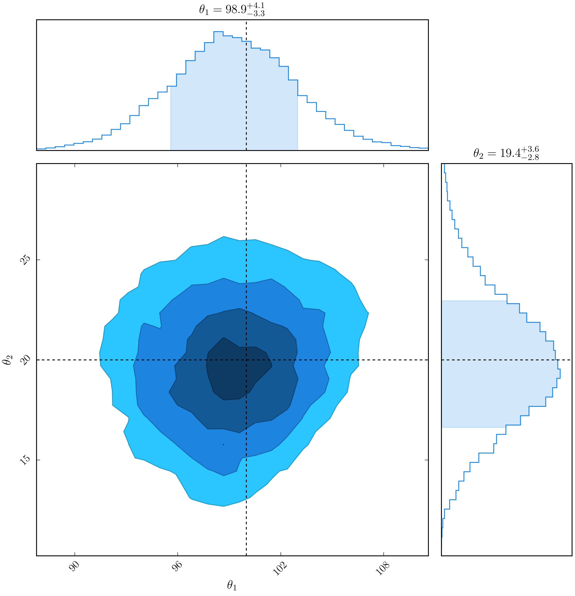
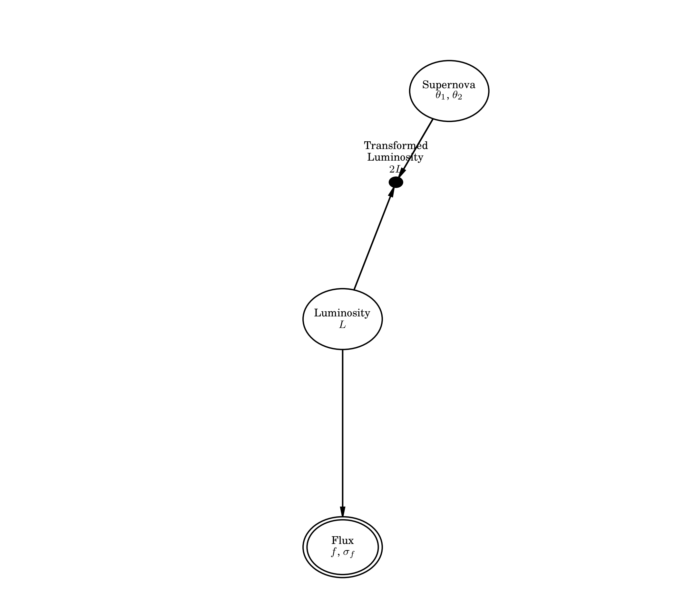

dessn.simple.modelbased package¶
I have placed the class based example for implementing the simplified model
into its own module, so that the documentation generating for the simple module
does not get cluttered with all the small classes this module will have.
The primary class to look at in code is the ExampleModel class.
I should finally note that in order to demonstrate parameter transformations, I
have modified the model used in the previous two examples (ExampleIntegral
and ExampleLatent) to also include a luminosity transformation, where I
simply halve the luminosity before converting it to flux. Physically, this could
represent a perfect 50% mirror absorption on the primary telescope mirror.
Submodules¶
dessn.simple.modelbased.exampleModel module¶
-
class
dessn.simple.modelbased.exampleModel.ExampleModel[source]¶ Bases:
dessn.model.model.ModelAn implementation of
ExampleLatentusing classes instead of procedural code.The model is set up by declaring nodes, the edges between nodes, and then calling
finaliseon the model to verify its correctness.This is the primary class in this package, and you can see that other classes inherit from either
Parameteror fromEdge.I leave the documentation for
ParameterandEdgeto those classes, and encourage viewing the code directly to understand exactly what is happening.Running this file in python first generates a PGM of the model, and then runs
emceeand creates a corner plot:
-
class
dessn.simple.modelbased.exampleModel.FluxToLuminosity[source]¶ Bases:
dessn.model.edge.Edge
-
class
dessn.simple.modelbased.exampleModel.LuminosityToSupernovaDistribution[source]¶ Bases:
dessn.model.edge.Edge